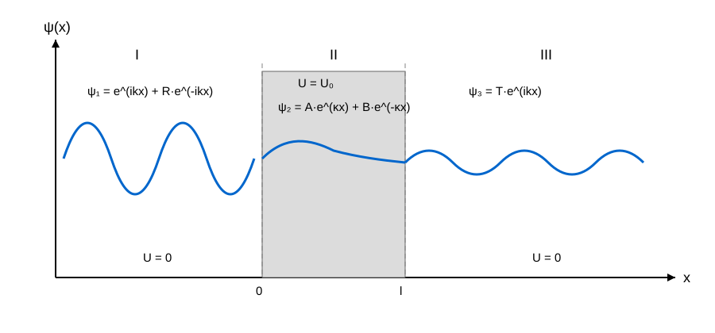

Структура атома як елементарної складової частинки речовини
1803 – 1808 - Джон Дальтон на основі закону збереження маси і закону сталості складу речовини запропонував першу наукову атомну теорію:
- речовина складається з атомів;
- атоми одного елемента однакові;
- атоми не можна поділити чи зруйнувати хімічними методами.
1897 - Джозеф Томсон досліджував катодні промені. Він встановив:
- катодні промені складаються з негативно заряджених частинок;
- ці частинки набагато легші за атоми.
Після відкриття електрона виникла проблема: якщо атом нейтральний, де знаходиться позитивний заряд?
1904 - Томсон запропонував модель:
- атом — позитивно заряджена куля;
- всередині неї «вмонтовані» електрони, які роблять атом в цілому нейтральним.
1909 - Ганс Гейгер і Ернест Марсден за завданням Резерфорда опромінювали золоту фольгу α-частинками. Оскільки позитивний заряд нібито розмазаний по всьому атому:
- частинки повинні проходити майже прямо;
- можливі лише дуже малі відхилення.
- деякі частинки відхилялися на великі кути;
- приблизно одна з десятків тисяч відбивалася майже назад.
1911 - модель атома Резерфорда:
- у центрі є маленьке позитивно заряджене ядро;
- навколо нього рухаються електрони на великій відстані;
- більша частина об'єму атома порожня;
- майже вся маса атома зосереджена в ядрі.
- Z — зарядове число ядра (показує кількість протонів у ядрі)
- e — елементарний заряд e = 1.602176634×10^{−19} Кл; e^2 = 2.566×10^{−38} Кл^2
- ε_0 — електрична стала ε_0 = 8.8541878128×10^{−12} Ф/м
- m — маса електрона m ≈ 9,10938×10^{−31} кг ≈ 5,48579×10^{−4} а.о.м. ≈ 0,511 МеВ;
- v — швидкість електрона;
- r — радіус орбіти;
Експеримент дозволив оцінити:
- розмір атома - порядку 0,1 нм (10^{-10} м);
- розмір ядра - порядку 0,01 пм (10^{-14} - 10^{-15} м)
Проблема 1:
- За класичною електродинамікою заряджена частинка, яка рухається по колу, повинна випромінювати енергію.
- Тоді електрон мав би втрачати енергію, спірально падати на ядро і атом мав би руйнуватися приблизно за 10^{−11} – 10^{−8} секунд.
- Але атоми існують і є стабільними.
- При спектральному аналізі атомів моделі Резерфорда, якби електрон міг мати будь-яку енергію, атом випромінював би суцільний спектр.
- На практиці спостерігалися окремі лінії (наприклад, Натрій - дві дуже яскраві жовті лінії).
- Це означає, що електрон може мати лише певні дозволені енергії.
1885 - Швейцарський учитель математики Йоханн Якоб Бальмер вирішив емпіричним шляхом підібрати формулу для видимих спектральних ліній водню. Він вивів правило:
Це чисто емпірична формула без фізичного змісту.
1888 - Йоханнес Рідберг узагальнив формулу Бальмера:
- \frac{1}{λ} — так звана хвильова кількість, що показує, скільки довжин хвиль укладається в одному метрі (м^{-1}).
- R ≈ 1.097 × 10^7 м^{−1} - стала Рідберга - одна із фундаментальних констант атомної фізики, яка визначає масштаб усіх спектральних ліній водню.
- k > n завжди: k=3, n=2 і т.п.
У 1900 році Макс Планк припустив, що електромагнітне випромінювання випромінюється й поглинається не безперервно, а окремими порціями — квантами:
- h — стала Планка;
- ℏ = h/2π — зведена стала Планка;
- ν — частота світлової хвилі;
- ω — кутова частота.
Крім того, світло переносить імпульс:
- λ — довжина хвилі;
- k = 2π/λ — хвильове число.
Теорія Бора
1913 р. - Нільс Бор проаналізував модель Резерфорда і проблеми, які вона не вирішувала, і запропонував свою модель атома.
Перший постулат:
Існують особливі орбіти - так звані стаціонарні орбіти, рухаючись по яких електрон не випромінює енергію.
Орбітальний момент імпульсу електрона на цих орбітах може набувати лише дискретних значень:
- L — момент імпульсу електрона;
- m — маса електрона m ≈ 9,10938×10^{−31} кг ≈ 5,48579×10^{−4} а.о.м. ≈ 0,511 МеВ;
- v — швидкість електрона;
- r — радіус орбіти;
- n = 1,2,3... — головне квантове число;
- ℏ — \frac {h}{2π} із формули енергії кванта Планка E = h ν, де ν = \frac{1}{T} = \frac{1}{2π} — частота хвилі електрона (Т - період коливань); h ≈ 6.626×10^{−34} Дж/с - стала Планка.
Другий постулат:
При переході із однієї стаціонарної орбіти на іншу, електрон випромінює/поглинає
квант енергії:
Вирішивши систему рівнянь із Першого постулату Бора і рівняння Резерфорда, можна отримати формули для радіуса електронних орбіт:
Знак "-" у формулі вказує на те, що електрон прив'язаний до атома і для руйнування цього зв'язку необхідно затратити енергію.
Дані розрахунки показують, что енергія електрона може приймати лише дискретні значення: n = 1 → -13.6 еВ; n = 2 → -3.4 еВ; n = 3 → -1.51 еВ і т.д.
Для атома Водню:
- При n = 1 енергетичний стан називають основним (нормальним, незбудженим).
-
Енергію, яку необхідно затратити, щоб перевести електрон на наступний рівень -
енергія збудження. Викорстовуючи формулу Рідберга для довжини хвилі:
e⋅U_З = h⋅ν = h\frac{c}{λ} = h⋅R⋅c⋅(\frac{1}{n^2} - \frac{1}{k^2}) ,де c - швидкість світла у вакуумі (c≈3.0×10^8 м/с).
-
Відповідно, потенціал збудження:
U_З = \frac {h⋅R⋅c}{e}⋅(\frac{1}{n^2} - \frac{1}{k^2}) ,
-
Енергія, яку необхідно затратити, щоб перемістити електрон із основного стану (n = 1)
на нескінченність (іонізувати атом - k → ∞), називається енергією іонізації:
e⋅U_І = h⋅R⋅c
Теорія Бора залишала невирішеними дві проблеми:
- Для багатоелектронних атомів ці рівняння не завжди працювали.
- Чому спектральні лінії різних атомів різної інтенсивності?
Корпускулярно-хвильовий дуалізм
1924 - Луї де Бройль сформував ідею корпускулярно-хвильового дуалізму: якщо світло (хвиля) має частинкові властивості, то частинки (електрони) можуть мати хвильові властивості.
Він узяв рівняння імпульсу фотона із теорії Ейнштейна:
Для будь-якої хвилі її швидкість розповсюдження v_{хв} є добутком частоти цієї хвилі f на її довжину λ:
У більшості задач квантової механіки (електрони в атомі) швидкість електрону набагато менша швидкості світла v ≪ c, тому формула де-Бройля набуває наступного вигляду:
Кінетична енергія електрона в полі
Якщо електрон прискорюється напругою U, робота поля:
Умова стаціонарності орбіти
На основі своєї теорії де-Бройль доповнив перший постулат Бора: стаціонарні стани електронів у атомах - це такі, при яких на довжині орбіти укладається ціле число довжин хвиль. Тобто хвиля має замкнутись сама на себе без "зсуву фази". Таким чином, на орбіті, довжиною 2πr, має бути ціле число довжин хвиль:
Фінальна умова Бора:
Головна ідея:
- електрон в атомі не "літає по орбіті" як планета, а існує як стояча хвиля;
- дозволені лише ті стани, де хвиля "вкладається" в орбіту.
Принцип невизначеності Гейзенберга
У класичній механіці можна сказати:
- де знаходиться кулька (координати);
- куди вона летить (траекторія);
- з якою швидкістю.
1927 - Гейзенберг сформував рівняння невизначеності, які встановлюють співвідношення між описом стану систем у класичній і квантовій теоріях:
- Δx, Δy, Δz - невизначеність координат x, y, z в даній точці
- Δp_x, Δp_y, Δp_z - невизначеність імпульса відповідної компоненти
- ħ = h/(2π).
Так, наприклад, хвиля нескінченної довжини має добре визначену довжину хвилі, а отже і добре визначений імпульс. Але де знаходиться електрон? Невідомо. Він може бути будь-де.
Аналогічним чином функціонує і невизначеність енергії ΔW та часу Δt:
Наприклад, збуджений атом існує обмежений час, тому енергія його рівня трохи "розмазана". Через це спектральні лінії мають кінцеву ширину.
Співвідношення невизначеності встановлюють межі точності виміру фізичних величин.
Хвильова функція
Будь-яка хвиля, не залежно від її природи, характеризується хвильовою функцією, яка показує, як змінюється хвиля у просторі та часі і в загальному випадку виглядає наступним чином:
- A — амплітуда хвилі;
- ω = 2⋅π⋅ν — циклічна частота;
- t — час;
- \vec k — хвильовий вектор;
- \vec r — радіус-вектор точки простору.
-
\vec k⋅\vec r = k_x⋅x+k_y⋅y+k_z⋅z — скалярний добуток — якщо хвиля поширюється лише вздовж осі x, то
\vec k⋅\vec r = k⋅x і формула спрощується до:
ψ = A⋅cos(ω⋅t - k⋅x)
-
k — хвильове число — показує, скільки радіан фази припадає на один метр:
k = \frac {2π}{λ}
Інтерпретація Борна
1926 - Борн наділив ψ-функцію статистичним сенсом: хвильова функція має ймовірнісну інтерпретацію і |ψ|^2 визначає ймовірність dN виявити мікрочастинку в межах об'єму dV в даний момент t:
Якщо частинка існує, то вона знаходиться десь у просторі. Ймовірність знайти її в одній із точок - це ймовірність достовірної події, тобто рівна 1. Тоді:
Таким чином, у квантовій механіці стан частинки і квантової системи описує хвильова функція (ψ-функція), аналогічно тому як у класичній механіці стан тіла описують координатами та імпульсом. Але так як ψ-функція має статистичний характер, вона дозволяє лише вирахувати ймовірність всіх величин, які характеризують стан системи і їх середнє значення.
Хвильова функція Шредингера
Для більш широкого кола задач у 1926 році Елен Шредингер постулював більш загальне рівняння ψ-функції:
- iℏ\frac {∂ψ}{∂t} — показує, як хвильова функція змінюється з часом;
- - \frac {ℏ^2}{2m}∇^2ψ — кінетична енергія частинки;
-
∇^2 — лапласіан — показує, наскільки швидко функція викривляється в просторі:
∇^2ψ = \frac {∂^2ψ}{∂x^2} + \frac {∂^2ψ}{∂y^2} + \frac {∂^2ψ}{∂z^2}
- Uψ — потенціальна енергія (електричне поле, поле ядра атома, потенціальний бар'єр p-n-переходу).
Саме це рівняння розв'язують для атома водню, електронів у кристалі, потенціальних ям, квантових точок, тунельних діодів.
Стаціонарні стани
У загальному випадку хвильова функція залежить від часу:
- потенціальна енергія не змінюється з часом;
- повна енергія частинки стала.
простішого стаціонарного рівняння.
Для одновимірного випадку:Типовий алгоритм розв'язання квантової задачі
-
Для стаціонарного стану розділяємо хвильову функцію на часову та просторову частини:
\psi(x,y,z,t)=\psi(x,y,z)\,e^{-iWt/\hbar}або, якщо частинка рухається вздовж осі х:\psi(x,t)=\psi(x)\,e^{-iWt/\hbar}де:
- \psi(x) — просторова частина хвильової функції;
- e^{-iWt/\hbar} — часова частина (виводиться математично при спробі відділити часову частину в окремий множник);
- W — повна енергія частинки.
- Задаємо потенціальну енергію. Наприклад, вільна частинка (U = 0), потенціальна яма, потенціальний бар'єр.
-
Підставляємо розділену хвильову функцію в повне рівняння Шредінгера і отримуємо стаціонарне рівняння:
∇^2ψ + \frac{2m}{ℏ^2}(W - U)ψ = 0або, якщо частинка рухається вздовж осі х:\frac{d^2\psi}{dx^2} +\frac{2m}{\hbar^2}(W-U)\psi=0.
- Знаходимо загальний розв'язок.
- Накладаємо граничні умови (наприклад, на стінках ями ψ = 0).
- Отримуємо допустимі хвильові функції та дозволені значення енергії.
Розв'язання рівняння для вільної частинки
Вільна частинка - це та, на яку не діють ніякі зовнішні сили (U = 0).
Нехай вільна частинка рухається по осі х. Тоді рівняння Шредінгера для неї:
Проміжний розв'язок.
Позначимо:Розв'язання рівняння для вільної частинки в одномірній прямокутній потенційній ямі
Потенційна яма — це область простору, де потенціальна енергія частинки менша, ніж у навколишньому просторі. Наприклад, якщо кулька лежить у заглибленні, то їй необхідно отримати додаткову енергію, щоб викотитися на пагорб. У квантовій механіці роль кульки виконує електрон, атом, протон, будь-яка інша мікрочастинка. Роль висоти поверхні виконує потенціальна енергія U(x). На практиці цю модель застосовують до:
- електрону біля ядра - кулонівська потенційна яма;
- електрону в металі: для виходу назовні йому необхідно здійснити роботу виходу;
- нуклонів усередині ядра;
- квантових точок - замкнення електрону в дуже малому об'ємі;
- тощо.
Порядок розв'язання
Нехай частинка рухається вздовж осі х. При цьому її рух обмежений безкінечними (через які неможливо "перестрибнути"),
стінками потенційної ями, через які ніяк неможливо пройти. Нехай яма має ширину l, тоді її
потенційна енергія задовольняє умові:
Частинка не може вийти за межі ями. Всередині ями вона може мати будь-яку швидкість, а отже і
будь-який імпульс і будь-яку енергію.
Загальним розв'язком рівняння для вільної частинки є:
Якщо вирахувати із цієї формули довжину хвилі λ і підставити у рівняння де Бройля:
Порядок знаходження коефіцієнту А
Із умови нормування ψ-функції:
Тунельний ефект
Порядок розв'язання
Нехай частинка рухається вздовж осі ох назустріч потенційному бар'єру прямокутної форми, висотою U_0 (потенційна енергія бар'єру) і шириною l.
Згідно з класичними уявленнями, якщо повна енергія частинки W < U_0, то частинка не зможе перетнути бар'єр і відіб'ється від нього. Щоб перетнути бар'єр, частинка має мати енергію W > U_0.
У квантовій механіці є відмінна від нуля ймовірність, що при W > U_0 частинка відіб'ється від бар'єру, а при W < U_0 вона зможе перетнути бар'єр.
Для просторової частини хвильової функції:
- до бар'єру: U = 0 при 0 < x
- всередині бар'єру: U = U_0 при 0 ≤ x ≤ l
- після бар'єру: U = 0 при x > l
У області до бар'єру U = 0, отже функція має вигляд:
- A⋅e^{ikx} — падаюча хвиля;
- B⋅e^{−ikx} — відбита хвиля.
У області всередині бар'єру U = U_0, отже функція має вигляд:
У області після бар'єру U = 0, отже функція має вигляд:
На межах x=0 та x=l хвильова функція та її похідна повинні бути неперервними:
- ψ_I(0)=ψ_{II}(0)
- ψ'_I(0)=ψ'_{II}(0)
- ψ_{II}(l)=ψ_{III}(l)
- ψ'_{II}(l)=ψ'_{II}(l)
Для знаходження ймовірності проходження частинки через бар'єр, необхідно знайти коефіцієнт F. Для цього задають амплітуду падаючої хвилі A, після чого знаходять інші коефіцієнти.
Для тонкого бар'єру, коли κl≫1, одержують наближено:
Даний розв'язок показав, що всередині хвиля не зникає миттєво: один із доданків швидко зменшується. Якщо бар'єр вузький, то до точки x = l хвиля ще має ненульову амплітуду. Тому після бар'єру ψ_{III}(x) ≠ 0, отже |ψ_{III}|^2 ≠ 0, а значить існує ненульова ймовірність знайти частинку за бар'єром. Саме це явище називають тунельним ефектом.

Даний ефект знайшов широке застовування на практиці:
- явище α-розпаду - ядро утримує α-частинку потенціальним бар'єром, частинка тунелює назовні;
- в тунельних діодах - у дуже сильно легованому p-n переході бар'єр стає надзвичайно тонким і електрони починають тунелювати через нього;
- флеш-пам'ять - запис інформації відбувається через тунелювання електронів;
- сканувальний тунельний мікроскоп - вимірює тунельний струм між голкою та поверхнею.
Лінійний гармонійний осцилятор
Лінійний гармонійний осцилятор - це найменування частинки, яка здійснює одновимірні гармонійні коливання навколо осі (подібно пружині, маятнику, атому у кристалічній ґратці) під дією квазіпружної сили :
Майже будь-яку систему біля положення рівноваги можна наблизити параболою. Тому коливання атомів у кристалі — це майже гармонічний осцилятор.
Розв'язок рівняння Шредінгера дає:
Навіть при n = 0 енергія не дорівнює нулю. Якби енергія була нульовою, x = 0 і p = 0 одночасно, а це забороняє принцип невизначеності Гейзенберга. Тому навіть при абсолютному нулі атоми продовжують трохи "тремтіти". Це називають нульовими коливаннями.
Воднеподібний атом
Воднеподібним називають атом або іон, у якому навколо ядра рухається лише один електрон (H = +1e; He⁺ = +2e; Li²⁺ = +3e; Be³⁺ = +4e).
Порядок розв'язку
Тут електрон рухається в центральносиметричному кулонівському полі ядра. Потенціальна енергія взаємодії:
Рівняння Шредингера для стаціонарного стану воднеподібного атома:
- r — відстань до ядра;
- θ — полярний кут (вісь oz);
- φ — азимутальний кут (між осями ox і oy).
- R(r) — радіальна частина;
- Y(θ,φ) — кутова частина.
Для функції R(r) отримуємо окреме диференціальне рівняння. Після накладання граничних умов:
- хвильова функція скінченна;
- хвильова функція нормована;
- при r→∞;
Для функції Y(θ,φ) отримуємо окреме диференціальне рівняння. Його розв'язок існує лише для певних цілих чисел:
- l — азимутальне квантове число;
- m — магнітне квантове число.
При розв'язанні кутового рівняння з'ясовується, що момент імпульсу електрона може бути лише
У просторі потрібно знати не лише довжину вектора моменту імпульсу, а й його напрямок. Квантова механіка показує: проекція моменту імпульсу на вісь z:
Під час розв'язання радіального рівняння виходить додаткова умова:
Тому повна хвильова функція записується як
- 1s → n=1,l=0,m=0;
- 2p → n=2,l=1,m=−1,0,+1;
- 3d → n=3,l=2,m=−2,−1,0,+1,+2.
Результати розв'язку рівняння Шредингера для воднеподібних атомів дозволили розширити уяву про структуру атома:
-
У теорії Бора енергетичні рівні вводилися постулатами. У квантовій механіці
вони автоматично виникають із розв'язку рівняння Шредінгера.
Для воднеподібного атома:
W_n = -\frac {-13,6Z^2}{n^2} еВТаким чином, для водню (Z = 1): [ n = 1 → - 13.6 еВ ] [ n = 2 → -3.4 еВ ] [ n = 3 → -1.51 еВ ] [ n = 4 → -0.85 еВ ]. Від'ємна енергія означає, що електрон прив'язаний до атома. Якщо W>0, то електрон уже не зв'язаний - він вільний. За нуль енергії приймають стан, коли електрон знаходиться нескінченно далеко від ядра (r→∞).
-
За розрахованими значеннями енергій можна побудувати діаграму енергетичних станів водню:
| 0 еВ ─────────────
| n = ∞
| -0.85 ───────── n=4
| -1.51 ───────── n=3
| -3.4 ────────── n=2
| -13.6 ───────── n=1
Кожна горизонтальна лінія — дозволений енергетичний стан. Електрон може перебувати тільки на цих рівнях. Чим вище рівень, тим ближче рівні один до одного. -
Після розв'язку рівняння Шредінгера з'являється перше квантове число - головне квантове число
n, яке
визначає енергію, середній розмір орбіталі і відстань електрона від ядра (чим більше n, тим далі електрон
від ядра), а також кількість енергетичних рівнів:
n=1,2,3,...
-
Наступне квантове число - азимутальне квантове число l, яке
визначає форму так званої електронної хмари і задає кількість підрівнів або підоболонок:
l=0,1,2,...,n−1Прийняті позначення:0 = s, 1 = p, 2 = d, 3 = f
- Електронна хмара являє собою наочну модель, яка описує ймовірність знаходження електрона навколо ядра атома. Так, на відміну від теорії Бора, де електрон умовно рухається по орбіті, у квантовій механіці існує хмара ймовірності знаходження електрону. Тобто ми не можемо сказати "електрон зараз тут", можемо сказати лише "тут імовірність його знайти найбільша".
-
Ще одне квантове число - магнітне квантове число m,
яке для кожного l задає різні можливі орієнтації у просторі:
m = -l,…,0,…,+l .Кількість можливих значень m дорівнює числу орбіталей - числу квантових станів із конкретними n, l, m. У сучасній квантовій механіці орбіталь — це фактично одна хвильова функція ψ_{n,l,m}(r,θ,φ).
- Наприклад, для третього енергетичного рівня із n = 3 можливі значення l = 0, 1, 2 - їх позначають 3s, 3p і 3d і називають підрівнями або підоболонками. Для кожної підоболонки існують орбіталі, наприклад для 3p кількість орбіталей дорівнює трьом (m = -1, 0, +1), у хімії їх умовно називають 3p_x, 3p_y і 3p_z.
- При поглинанні фотону енергії, електрон може перейти на вищий рівень. Це називається збудження атома Тут фотон - це безмасова частинка, яка здатна існувати у вакуумі тільки рухаючись зі швидкістю світла і переносити квант енергії, прямопропорційний його частоті.
-
Після деякого часу електрон повертається назад, випромінюючи фотон, енергія якого:
hν = W_3 -W_2 .Саме так виникають спектральні лінії.
-
Не будь-який перехід дозволений. Для воднеподібних атомів основне правило:
Δl=±1Так, s ↔ p дозволено, а s ↔ d безпосередньо заборонено. Це пояснює, чому деякі спектральні лінії яскраві, а деякі відсутні.
- Для атома водню енергія залежить лише від n і не залежить від l та m. Наприклад, два атоми, що мають однакову енергію, але різні електронні хмари 2s і 2p. Такі рівні називаються виродженими.
Багатоелектронні атоми
Більшість реальних атомів містять багато електронів і в даному випадку кожен електрон взаємодіє не лише з ядром, а і з усіма іншими електронами: на нього діють сили кулоновського відштовхування і специфічна обмінна взаємодія, пов'язана із принципом нерозрізнюваності тотожних частинок (тобто тих, які мають однакові маси, заряди і т.п.).
Принцип нерозрізнюваності електронів - одна з найважливіших ідей квантової механіки. У класичній фізиці кожен електрон можна пронумерувати. У квантовій механіці це неможливо: всі електрони абсолютно однакові (однакові маса, заряд і т.п.) і коли їхні хвильові функції перекриваються, можна говорити лише про систему електронів загалом.
Повна механічна енергія системи із N електронів являє собою суму кінетичних енергій частинок, потенціальних енергій їх взаємодії з полем зовнішніх сил, а також одна з одною.
У воднеподібних атомах енергія залежала лише від головного квантового числа n. У складних атомах взаємодія між електронами частково руйнує цю просту картину і енергія починає залежати вже і від орбітального квантового числа l (відсутнє виродження):
Орбітальний момент імпульсу одного електрона:
Орбітальний рух електрона створює магнітний момент:
Коли електрон переходить між рівнями (E2 → E1), випромінюється фотон відповідної енергії. Оскільки кожен елемент має власний набір енергетичних рівнів, то випромінюються фотони різних енергій, які можна наглядно зафіксувати у вигляді спектру. Таким чином, якщо нагріти речовину і подивитися на її спектр, можна визначити, які елементи входять до її складу і їх концентрацію.
Ефект Зеємана
У магнітному полі спостерігається явище розщеплення спектральних ліній. Це явище називається ефект Зеємана.
Чому так відбувається? Електрон має магнітний момент і якщо помістити його в зовнішнє магнітне поле - з'являється додаткова енергія:
Проміжні розрахунки
Електрон, що рухається навколо ядра, можна розглядати як контур зі струмом, що має магнітний момент:Тоді магнітний момент струмового контуру:
Для багатоелектронного атому орбітальний момент імпульсу:
Проекція магнітного моменту:
При точних вимірюваннях виявилося, що навіть без зовнішнього поля деякі спектральні лінії вже трохи розщеплені. Це назвали тонкою структурою спектра.
Крім того, існував ще так званий аномальний ефект Зеємана, коли при l = 1 електрона в однорідному магнітному полі замість трьох ліній часто спостерігали 4, 6 і більше ліній. Це наштовхувало на думку, що є ще деяка не врахована сила.
Спін
У 1921 Штерн і Герлах проводили дослід із металевим сріблом. У срібла електронна конфігурація закінчується на 5s^1, це означає, що всі внутрішні електрони попарно компенсують свої орбітальні і магнітні моменти і магнітні властивості атома визначає практично лише один валентний електрон - той, який знаходиться на зовнішньому (найвіддаленішому від ядра) енергетичному рівні атома.
При нагріванні срібла в печі частина атомів випаровувалася і вилітала через вузьку щілину: утворювався вузький потік атомів срібла. Потім цей потік пропускали через неоднорідне магнітне поле (сильніше зверху і слабше знизу, так як в однорідному полі пучок би не рухався), яке діяло на атом із силою:
На практиці на екрані з'явилися дві окремі плями, а середини між ними практично не було. Даний ефект є наслідком фундаментальної квантової властивості електрона - спіна s. Дану концепцію запропонували Джордж Уленбек та Самуель Гаудсміт. Типу спін - це власний внутрішній момент імпульсу електрона, який не пов'язаний із рухом електрона навколо ядра.
Властивості спіна електрона враховує спінове квантове число m_s, яке може приймати лише два значення:
Важливе уточнення: неоднорідне постійне магнітне поле, так само як і однорідне, розщеплює енергетичні рівні на 2l+1 підрівнів. В даному експерименті використовувалося саме неоднорідне поле, так як воно створювало додаткову силу, яка відхиляла пучок електронів.
Проміжні розрахунки
Таким чином, існує відповідно спіновий момент імпульсу:Енергія спіну в магнітному полі:
Для реального атома електрона вводять повний момент, який є результатом взаємодії орбітального моменту L + спінового моменту S:
Проміжні розрахунки
Для нього також справедливо:Електронний парамагнітний резонанс
Якщо електрон помістити у постійне магнітне поле B_0, то буде спостерігатися
розщеплення енергетичних рівнів на 2j+1 підрівнів.
При l = 0 відбувається спінове розщеплення:
| ── верхній ──────
| ΔW
| ── нижній ───────
де ΔW = g_j μ_BB_0. Через теплову рівновагу трохи більше електронів перебуває на нижньому рівні.
Якщо додатково подати змінне магнітне поле B_1(t), то за певної частоти ν електрон поглинає фотон із енергією hν і переходить на верхній рівень:
Умови виникнення електронного парамагнтітного резонансу:
- наявність одночасно постійного і змінного магнітного полів;
-
частота змінного магнітного поля має відповідати частоті фотону відповідної енергії,
необхідної для переходу електрону із одного енергетичного рівня на інший;
резонансна умова:
hν = g_jμ_BB
- парамагнітний резонанс працює лише з неспареним електроном.
- має існувати верхній стан;
- має бути дозволеним квантовий перехід.
Електронний парамагнітний резонанс (ЕПР) використовують для:
- дослідження вільних радикалів;
- дефектів кристалів;
- іонів перехідних металів;
- квантових бітів на електронних спінах.
У багатьох іонів перехідних металів (Fe³⁺, Mn²⁺, Gd³⁺) є є кілька неспарених електронів. Їхні спіни складаються, і виникає сумарний спін. Наприклад, у йона Fe³⁺:
Існують і інші резонанси:
- Ядерний магнітний резонанс (ЯМР) - багато ядер мають власний спін I ≠ 0, який задає їх стан у магнітному полі. Використовують у МРТ, структурному аналізі молекул, біохімії, фармацевтиці.
- Ядерний квадрупольний резонанс (NQR) - працює для ядер зі спіном I > \frac{1}{2} - ядро взаємодіє не тільки з магнітним полем, а й з неоднорідним електричним полем кристала. Використовують у пошуку вибухівки, контролю ліків, аналізі кристалічних матеріалів.
- Мюонний резонанс - частинка мюон (або "важкий електрон", μ^±) має заряд, спін і магнітний момент. Його можна вводити в матеріал як квантовий "зонд". Використовують у дослідженні надпровідників, магнітних матеріалів, фізики твердого тіла.
- Атомний магнітний резонанс - тут резонують уже не окремі електрони чи ядра, а цілі атомні стани. Саме на цьому базуються атомні годинники. Наприклад у атомі цезію використовується перехід між двома надтонкими рівнями основного стану. Саме він визначає сучасну секунду.
-
Циклотронний резонанс - резонанс орбітального руху заряджених частинок (електрон або дірка в напівпровіднику).
У магнітному полі заряд рухається по колу з частотою:
ω_c = \frac {qB}{m*} .Якщо подати електромагнітне поле тієї ж частоти, виникає резонанс. Використовують для визначення ефективної маси m*, дослідження напівпровідників, фізика плазми.
- Резонанс Рабі - історично саме роботи Ізідор Рабі показали, що будь-яка дворівнева квантова система може переходити між станами під дією змінного поля. Можна мати |0⟩ ←→ |1⟩ і керувати переходами лазером, мікрохвилями або радіохвилями. Саме на цьому базуються квантові комп'ютери, атомні годинники, квантові сенсори.
Всі ці резонанси — окремі випадки загального явища магнітного резонансу квантових систем, які мають:
- спін (S або I);
- магнітний момент μ;
- розщеплення рівнів у зовнішньому магнітному полі.
Ферміони і бозони
У складних атомах стан електрона визначається 4 квантовими числами: n, l, m_l, m_s
В нормальному (незбудженому) стані атома електрони мали б розташовуватися на найнижчих доступних для них енергетичних рівнях, тому здавалося б, усі електрони мали б знаходитися в 1s стані. Але на практиці електрони в незбудженому стані багатоелектронного атома займають вищі рівні.
У 1925 році Вольфганг Паулі сформулював принцип Паулі: у багаточастинковій системі не може існувати двох електронів з однаковим набором усіх чотирьох квантових чисел. Тобто на одній орбіталі можуть перебувати максимум два електрони: один зі спіном +1/2 і другий зі спіном -1/2. Іншими словами, в одному квантовому стані в атомі може існувати тільки один електрон, і для кожного електрона є своя хвильова функція ψ_n,l,m(r,θ,φ) Саме через це:
- виникають електронні оболонки;
- існує періодична система елементів;
- утворюються хімічні зв'язки.
Втім, даний принцип поширюється не на всі елементарні частинки. Саме тому ввели поняття бозонів і ферміонів:
- Ферміони - не можуть перебувати в одному квантовому стані. Вони всі мають напівцілий спін (s = 1/2, s = 3/2, s = 5/2 тощо). До них відносять електрон, протон, нейтрон, нейтрино.
- Бозони можуть накопичуватися в одному стані у будь-якій кількості. Вони мають цілий або нульовий спін (s = 0, s = 1, s = 2 тощо). До них відносять фотон, глюон, деякі складені частинки
Усі електрони з однаковим головним квантовим числом n утворюють оболонку із максимальною кількістю електронів:
n = 2 — L-оболонка — N = 8
n = 3 — M-оболонка — N = 18
n = 4 — N-оболонка — N = 32
У складних атомах енергія залежить не тільки від n, а й від l.
Тому кожна оболонка ділиться на підоболонки:
l = 1 — s-підоболонка — 2 електрони
l = 2 — p-підоболонка — 6 електронів
l = 3 — d-підоболонка — 10 електронів
l = 4 — f-підоболонка — 14 електронів
Електрони займають стани з мінімальною енергією. Перші рівні заповнюються так:
- Вуглець (6 електронів): 1s² 2s² 2p²;
- Неон (10 електронів): 1s² 2s² 2p⁶ — зовнішня оболонка повністю заповнена, тому неон хімічно дуже інертний.
Кожен новий електрон повинен шукати вільний стан. У результаті:
- оболонки поступово заповнюються;
- властивості елементів періодично повторюються;
- виникає періодичний закон Менделєєва.